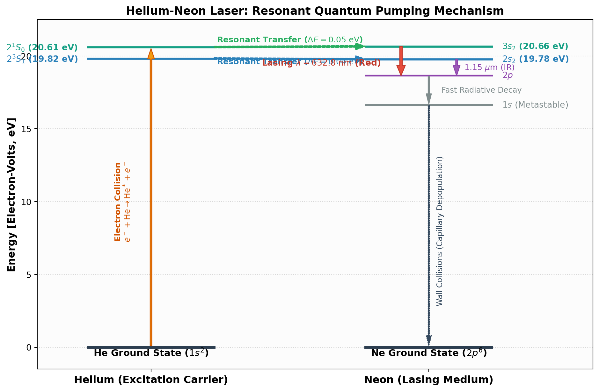

Code
import matplotlib.pyplot as plt
import matplotlib.patches as patches
fig, ax = plt.subplots(figsize=(10, 6.5))
# Set background styling
ax.set_facecolor('#fcfcfc')
fig.patch.set_facecolor('#ffffff')
# Draw energy levels for Helium
# He Ground: 0 eV
# He 2^3S1: 19.82 eV
# He 2^1S0: 20.61 eV
ax.plot([1.0, 3.5], [0, 0], color='#2c3e50', lw=3)
ax.text(2.25, -0.6, r'He Ground State ($1s^2$)', ha='center', fontsize=11, fontweight='bold')
ax.plot([1.0, 3.5], [19.82, 19.82], color='#2980b9', lw=2.5)
ax.text(0.8, 19.82, r'$2^3S_1$ (19.82 eV)', ha='right', va='center', fontsize=10, color='#2980b9', fontweight='bold')
ax.plot([1.0, 3.5], [20.61, 20.61], color='#16a085', lw=2.5)
ax.text(0.8, 20.61, r'$2^1S_0$ (20.61 eV)', ha='right', va='center', fontsize=10, color='#16a085', fontweight='bold')
# Draw energy levels for Neon
# Ne Ground: 0 eV
# Ne 1s: ~16.6 eV
# Ne 2p: ~18.6 eV
# Ne 2s: 19.78 eV
# Ne 3s: 20.66 eV
ax.plot([6.5, 9.0], [0, 0], color='#2c3e50', lw=3)
ax.text(7.75, -0.6, r'Ne Ground State ($2p^6$)', ha='center', fontsize=11, fontweight='bold')
ax.plot([6.5, 9.0], [16.65, 16.65], color='#7f8c8d', lw=2)
ax.text(9.2, 16.65, r'$1s$ (Metastable)', ha='left', va='center', fontsize=10, color='#7f8c8d')
ax.plot([6.5, 9.0], [18.65, 18.65], color='#8e44ad', lw=2)
ax.text(9.2, 18.65, r'$2p$', ha='left', va='center', fontsize=10, color='#8e44ad')
ax.plot([6.5, 9.0], [19.78, 19.78], color='#2980b9', lw=2.5)
ax.text(9.2, 19.78, r'$2s_2$ (19.78 eV)', ha='left', va='center', fontsize=10, color='#2980b9', fontweight='bold')
ax.plot([6.5, 9.0], [20.66, 20.66], color='#16a085', lw=2.5)
ax.text(9.2, 20.66, r'$3s_2$ (20.66 eV)', ha='left', va='center', fontsize=10, color='#16a085', fontweight='bold')
# Arrow: Electron Impact Pumping in Helium
ax.annotate('', xy=(2.25, 20.5), xytext=(2.25, 0.1),
arrowprops=dict(facecolor='#f39c12', edgecolor='#d35400', width=2, headwidth=8))
ax.text(1.7, 10.0, 'Electron Collision\n$e^- + \\text{He} \\to \\text{He}^* + e^-$',
rotation=90, va='center', ha='center', fontsize=9.5, color='#d35400', fontweight='bold')
# Arrows: Resonant Energy Transfer (He* -> Ne*)
# 2^1S0 -> 3s2 (Delta E = 0.05 eV)
ax.annotate('', xy=(6.5, 20.66), xytext=(3.5, 20.61),
arrowprops=dict(facecolor='#27ae60', edgecolor='#27ae60', width=2, headwidth=8, linestyle='--'))
ax.text(5.0, 20.95, r'Resonant Transfer ($\Delta E = 0.05\text{ eV}$)', ha='center', fontsize=9.5, color='#27ae60', fontweight='bold')
# 2^3S1 -> 2s2 (Delta E = 0.04 eV)
ax.annotate('', xy=(6.5, 19.78), xytext=(3.5, 19.82),
arrowprops=dict(facecolor='#2980b9', edgecolor='#2980b9', width=2, headwidth=8, linestyle='--'))
ax.text(5.0, 19.45, r'Resonant Transfer ($\Delta E = 0.04\text{ eV}$)', ha='center', fontsize=9.5, color='#2980b9', fontweight='bold')
# Laser Transitions in Neon
# 3s2 -> 2p4 (632.8 nm Red)
ax.annotate('', xy=(7.2, 18.65), xytext=(7.2, 20.66),
arrowprops=dict(facecolor='#e74c3c', edgecolor='#c0392b', width=3, headwidth=10))
ax.text(6.8, 19.5, r'Lasing $\lambda = 632.8\text{ nm}$ (Red)', ha='right', va='center', fontsize=10, color='#c0392b', fontweight='bold')
# 2s2 -> 2p4 (1.15 um IR)
ax.annotate('', xy=(8.3, 18.65), xytext=(8.3, 19.78),
arrowprops=dict(facecolor='#9b59b6', edgecolor='#8e44ad', width=2, headwidth=8))
ax.text(8.45, 19.2, r'$1.15\ \mu\text{m}$ (IR)', ha='left', va='center', fontsize=9.5, color='#8e44ad')
# Spontaneous decay: 2p -> 1s
ax.annotate('', xy=(7.75, 16.7), xytext=(7.75, 18.6),
arrowprops=dict(facecolor='#7f8c8d', edgecolor='#7f8c8d', width=1.5, headwidth=6))
ax.text(8.0, 17.65, r'Fast Radiative Decay', ha='left', va='center', fontsize=9, color='#7f8c8d')
# Wall de-excitation: 1s -> Ground
ax.annotate('', xy=(7.75, 0.1), xytext=(7.75, 16.6),
arrowprops=dict(facecolor='#34495e', edgecolor='#34495e', width=1.5, headwidth=6, linestyle=':'))
ax.text(7.9, 8.0, r'Wall Collisions (Capillary Depopulation)', rotation=90, ha='left', va='center', fontsize=9, color='#34495e')
ax.set_xlim(0, 11)
ax.set_ylim(-1.5, 22.5)
ax.set_ylabel('Energy [Electron-Volts, eV]', fontsize=12, fontweight='bold')
ax.set_title('Helium-Neon Laser: Resonant Quantum Pumping Mechanism', fontsize=13, fontweight='bold')
ax.set_xticks([2.25, 7.75])
ax.set_xticklabels(['Helium (Excitation Carrier)', 'Neon (Lasing Medium)'], fontsize=12, fontweight='bold')
ax.grid(axis='y', linestyle=':', alpha=0.5)
plt.tight_layout()
plt.show()